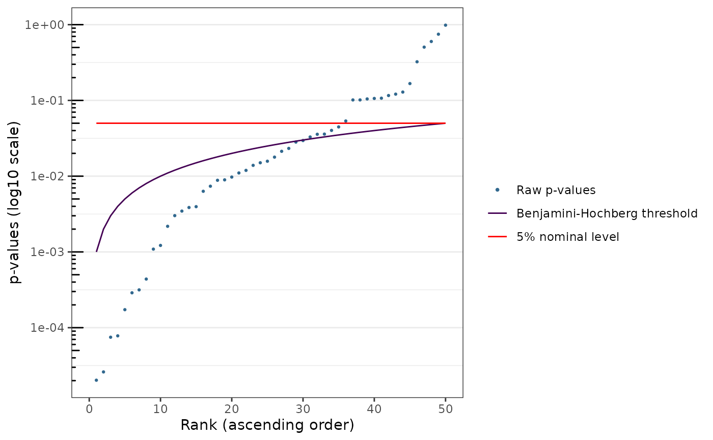

Plotting the sorted exact p-values along with the Benjamini-Hochberg limit and the nominal threshold
Usage
# S3 method for class 'cit_multi'
plot(x, ..., nominal_level = 0.05)Arguments
- x
an object of class
cit_multi.- ...
further arguments to be passed
- nominal_level
a nominal testing level between 0 and 1. Default is 5%:
0.05.
Examples
n <- 100
p <- 50
X1 <- as.factor(rbinom(n = n, size = 1, prob = 0.5))
Y <- replicate(p, ((X1 == 1) * rnorm(n = n, 0, 1)) + ((X1 == 0) * rnorm(n = n, 0.5, 1)))
res_asymp <- cit_multi(M = data.frame(Y = Y),
X = data.frame(X = X1),
test = "asymptotic",
parallel = FALSE)
plot(res_asymp)
